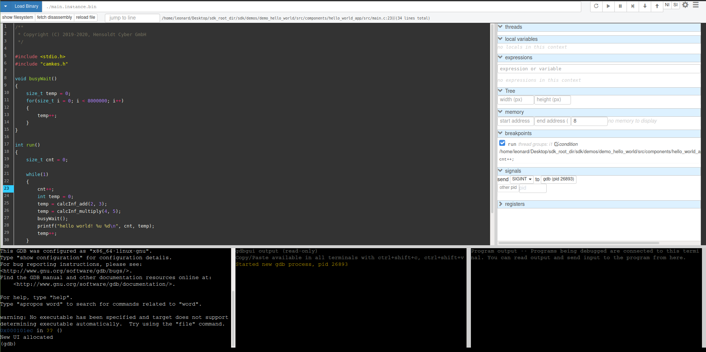

Debugging HW Platforms Using OpenOCD
Prerequisites
Install gdbgui
The prerequisites for debugging TRENTOS applications is the gdb
debugger
(https://www.gnu.org/software/gdb).
In addition, we will use gdbgui
(https://www.gdbgui.com), a browser-based
gdb front-end written in Python, which provides some convenience
features compared to the puristic gdb command line.
First, install the gdb-multiarch package:
sudo apt install gdb-multiarch
Then, install the gdbgui tool:
python3 -m pip install --user pipx
python3 -m userpath append ~/.local/bin
# Restart the console to make sure the userpath is updated.
pipx install gdbgui
pipx upgrade gdbgui
Install OpenOCD
Please refer tohttps://openocd.org/pages/getting-openocd.html for detailed instructions.
Before installing the tool it is necessary to install the library prerequisites.
sudo apt install libtool
Clone the OpenOCD repository.
The official repo ishttps://sourceforge.net/p/openocd/codebut the bandwidth seems to be limited. Hence, the unofficial GitHub mirror of an OpenOCD main developer can also be used at https://github.com/ntfreak/openocd.git:
git clone https://github.com/ntfreak/openocd.git
Switch to the folder and run the bootstrapper.
cd openocd
./bootstrap
Configure and build OpenOCD.
./configure
make
sudo make install
Debugging Process
HW Setup
Detailed instructions on how to connect theFT232H adapter to the individual platforms can be found in:
Once the platform setup is completed and the system can be run, power on the board.
Note: The board has to be powered on for the OpenOCD connection to
be established which needs to happen before starting gdbgui. Also,
gdbgui should not be started before the TRENTOS system has started
execution (more specifically, the component that you wish to debug)
because this results in an unstable connection (breakpoints are ignored,
single-stepping is not working etc.).
This means that the proper workflow should be (details on steps 2. and 3. are given in chapters below):
Power on the board
Start OpenOCD
After OpenOCD has successfully connected to the board and theTRENTOS system has started execution, start
gdbgui
Finally, if a system finishes execution and the main thread halts (e.g.
demo_hello_world after the message has been printed), using gdbgui
will not be possible anymore and steps 1.-3. need to be performed again.
Start OpenOCD
OpenOCD is started with two configuration files, one for the JTAG adapter and one for the platform.
The configuration files for theAdafruit FT232H adapter (which is
generic irrespective of the board used) as well as for all platforms can
be found in sdk/resources/openocd_cfgsinside the SDK root directory.
Once both configuration files are available, OpenOCD is started via the
following command. Using sudo might not be necessary if the current user
has all access rights.
sudo openocd \
-f <path_to_the_ft232h.cfg_file> \
-f <path_to_the_platform_specific.cfg_file>
Start gdbgui
Once OpenOCDhas successfully started, open another terminal window and start
gdbgui.
Info: TRENTOS systems are usually comprised of multiple components
(the seL4 microkernel, drivers, services and applications).
Unfortunately, gdb has no multitasking awareness by default and can only
work with one single binary/symbol table. Thus single-stepping across context
switches is not possible and debugging is limited to following the execution of
a single address space.
In a new terminal window, run the command shown below and replace the
<path/to/elf> argument with the path to the elf file that contains
the application you want to debug (e.g.
<system-build-directory>/os_system/<component-name>.instance.bin)
This will start the gdbgui tool and opens a gdb interface in
the default browser:
gdbgui --gdb gdb-multiarch --args <path/to/elf>
The following workspace shall now be opened in the browser:

Before connecting to the TCP port opened byOpenOCD we should address
the error message shown in the middle terminal in the image above. The
reason gdb cant find the source files based on the data in the
provided elf file is that the project was built using the trentos_build
container and the paths are set relative to the root of the container. To fix
this it is necessary to execute the following command inthe gdb terminal
(see lower-left sub-window of the gdbgui).
(gdb) set substitute-path /host <ABSOLUTE_PATH_OF_THE_SDK_ROOT_DIRECTORY>
This command replaces the /host part of the path for the source files
with their actual location on the host machine - in this case inside the
SDK root directory. After the command has been executed, clicking on the
show filesystem Fetch source files buttons in the top left
corner of the window will refresh the file locations and make them
available for visualization of the program execution.
The next step is to connect to the TCP port opened byOpenOCD using
the gdb terminal.
(gdb) target extended-remote :3333
After a successful connection to OpenOCD is established, it is possible
to use the standard gdb tools like setting breakpoints,
watchpoints, single stepping, inspecting variables, etc.
An example of this is setting the breakpoint on the desired line in a source file contained in the system that is being debugged.
(gdb) break <source-file>.c:<line-number>
This is also possible to achieve by simply clicking the desired line
number, provided the source file is opened in the central window of the
gdbgui interface.
After setting the breakpoint it should be visible on the right side of
the gdbgui interface (by default, the tool sets a breakpoint on
main, which is usually not the primary entry point in the case of
TRENTOS systems, so in order to avoid unnecessary breaks this breakpoint
can be disabled by unchecking it). After pressing the continue button in
the taskbar, the program starts and halts at the breakpoint and after
pressing the continue button once more, the system execution should
continue.
In order to debug different parts of the system, it is possible to load
different elf files without closing the gdbgui tool. Simply write
the path to the ELFfile you want to switch to in the top input bar and
press Load Binary, after which the symbols contained in this part of
the system will become available. It is worth pointing out
that gdb offers auto-complete functionality for entering debug
symbols when, for example, adding a breakpoint or a watchpoint, by
simply pressing tab.

Note: In case the debugged program contains empty loops (e.g. a delay loop)
stepping over these lines might cause gdb to halt and stop being usable
which would require a restart of the debug session. This is a known issue
(discussed here: https://sourceware.org/bugzilla/show_bug.cgi?id=21221) and
does not result from the presented setup. If you encounter this case, it is
enough to place a dummy operation in the body of the loop to remove the issue.
Ease of Use
Since during a single debug session it can happen that it is necessary
to start gdbgui multiple times, it is possible to make some
adjustments that will make this process easier by automating parts of
it. Instead of manually typing in the commands to substitute the path
and connect to the target platform, it is possible to place them in a
~/.gdbinit script inside your home directory. This will cause the
gdbgui to execute them upon every start-up which means that the source
files will be automatically loaded correctly and gdbgui will be
connected to the running target platform and ready for debugging.
set substitute-path /host <ABSOLUTE_PATH_OF_THE_SDK_ROOT_DIRECTORY>
target extended-remote :<TCP_PORT>
VS Code Plugin
In addition to gdbgui, it is possible to use the VS Code text editor
to debug the applications running on the HW platform. This is possible
after installing the necessary extensions and configuring the editor as
required.
Necessary extensions:
C/C++
ext install ms-vscode.cpptools\Cortex-Debug
ext install marus25.cortex-debug\
After the extensions have been installed, it is necessary to configure the debug environment of VS Code. In order to do so, follow these steps:
Open the folder
<sdk_root_folder>/sdkPress
Run Add Configuration ...Select any shown environment
In case this is the first time
Add Configuration ...is performed, this will create and open alaunch.jsonfile with template content.If you have already have a
launch.jsonfile, this will open it and add another configuration entry from a template
Delete the content of the new template configuration and paste the following configuration into it. Be sure to:
Replace the <PATH_TO_COMPONENT_ELF_FILE> with the absolute path to the component elf file you wish to debug, e.g.
~/sdk_root_directory/<system-build-directory>/os_system/<component-name>.instance.binReplace the<TCP_PORT> with the actual TCP port opened by OpenOCD - see the previous section
{
"version": "0.2.0",
"configurations": [
{
"type": "cortex-debug",
"request": "attach",
"name": "HW platform",
"cwd": "${workspaceRoot}",
"executable": "<PATH_TO_COMPONENT_ELF_FILE>",
"armToolchainPath": "/usr/bin/",
"servertype": "external",
"gdbTarget": "localhost:<TCP_PORT>",
"preLaunchTask": "Start-OpenOCD",
"postDebugTask": "Stop-OpenOCD"
}
]
}
Save the file
launch.jsonAfter completing the
launch.jsonconfiguration file it is necessary to specify the Start-OpenOCD and Stop-OpenOCD tasks which perform the lower level connection/disconnection to the platform using OpenOCD. To do so:Press
Terminal Configure Tasks ...Select any shown task template (this will create and open a
tasks.jsonfile)Delete the content of the opened file and paste the following configuration into it. Be sure to:
Replace the<ABSOLUTE_PATH_TO_FT232H_CONFIG> and<ABSOLUTE_PATH_TO_PLATFORM_CONFIG> with the absolute paths to the OpenOCD configuration files located in
sdk_root_directory/sdk/resources/openocd_cfgs/
{
"tasks": [
{
"type": "shell",
"label": "Start-OpenOCD",
"command": "openocd",
"args": [
"-f", "<ABSOLUTE_PATH_TO_FT232H_CONFIG>",
"-f", "<ABSOLUTE_PATH_TO_PLATFORM_CONFIG>"
],
"problemMatcher": {
"pattern": {
"regexp": "^(Info |Warn |Error):(.*)$",
"severity": 1,
"message": 2
},
"background": {
"activeOnStart": true,
"beginsPattern": "^Open On-Chip Debugger.*",
"endsPattern": ".*watchpoints.*"
}
},
"presentation": {
"reveal":"always"
},
"isBackground": true,
},
{
"type": "shell",
"label": "Stop-OpenOCD",
"command": "kill -9 `pidof openocd`",
"isBackground": true,
}
],
"version": "2.0.0"
}
Save the file
tasks.jsonMake OpenOCD usable without running it as
rootby performing the steps described in the tutorial here: https://elinux.org/Accessing_Devices_without_SudoGo to
Extensions Cortex-Debug Settings Cortex-debug:Gdb Path Edit in settings.jsonand add the following member to the JSON object:
"cortex-debug.gdbPath": "/usr/bin/gdb-multiarch",
Save the file
settings.jsonIn order for this setup to work, it is necessary to remove the following line from the
~/.gdbinitfile added for ease of use withgdbguiin the previous section:
target extended-remote :3333
After the setup is finished, the HW setup is completed based on the
instructions in previous sections depending on which platform is used,
and the board is powered on, it is possible to attach to the program
execution by pressing F5 or Run Start Debugging in VS Code.
After the connection is successfully established, normal debugging
functions are available similar to gdbgui (this setup can be more
convenient if VS Code is used as the primary source editor).